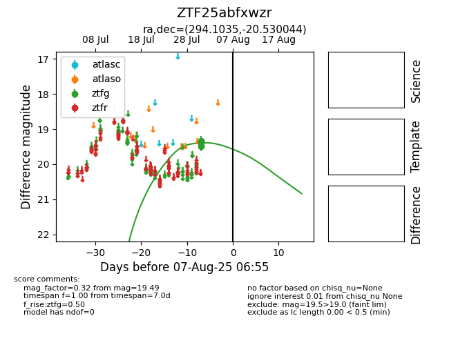

Target ZTF25abfxwzr at 2025-08-07 07:30, see:
FINK: fink-portal.org/ZTF25abfxwzr
Lasair: lasair-ztf.lsst.ac.uk/objects/ZTF25abfxwzr
ALeRCE: alerce.online/object/ZTF25abfxwzr
alt names
ZTF25abfxwzr (ztf,fink)
coordinates:
equatorial (ra, dec) = (294.1035,-20.53004)
galactic (l, b) = (18.9412,-18.80983)
photometry
last ztfg=19.49
5 ztfg detections
